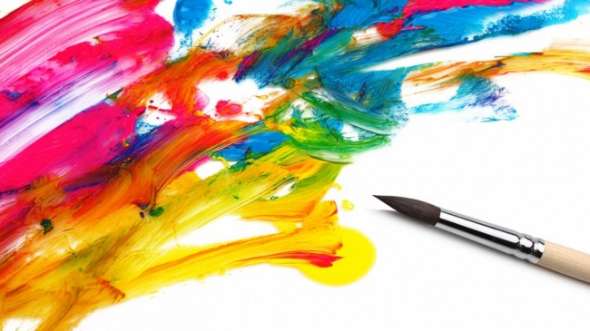

Новости
Художник и его талант

Художественный дар - это одновременно и талант, и огромный труд. Так как искусство во многом близко к ремеслу,
в нём сочетается безусловное природное дарование и простые технические навыки, без которых настоящего художника
никогда не будет. Именно сочетание дарования и неустанного ежедневного труда дает миру самых ярких и одарённых художников.
Смотреть в источнике
Как развить талант художника

Очень часто родители ограничивают малышей в творчестве, отнимая у них краски, потому что они пачкают свою одежду, карандаши,
так как ими дети старательно расписывают обои и мебель, пластилин, ведь им можно с легкостью испортить дорогой ковер или заляпать
паркет. Такие ограничения быстро ликвидируют всяческое стремление к искусству и талант ребенка увянет, так и не получив шанса на развитие.
Если же заниматься искусством хочет уже достаточно взрослый и сложившийся индивид, у него огромный простор для развития. Интернет даст
возможность познакомиться с самыми крупными мировыми музеями и частными собраниями. Книги по искусству помогут разобраться в техниках,
а многочисленные художественные школы и студии поспособствуют отработке техники и получению практических навыков.
Смотреть в источнике
Какого пола музыкант, играющий на лютне на картине Караваджо?

Художники прошлого часто не присваивали картинам названий, потребность в которых возникала при выставлении полотен на аукцион
или передаче в музей. Из-за женственных персонажей на ранних работах Караваджо историки искусства долго не могли прийти к единому
мнению, юноша или девушка играет на лютне на одной из его картин, хранящейся в Эрмитаже. В альбомах Эрмитажа 1950-х годов она
названа «Девушка с лютней», но сейчас она известна как «Юноша с лютней» или «Лютнист». Одним из подтверждений этой версии явилось то,
что расшифрованные ноты перед музыкантом относятся к мадригалу Якоба Аркадельта «Вы знаете, что я люблю вас», а именно к его басовой
партии, предназначенной для исполнения мужчиной.
Смотреть в источнике
Чем объясняется множество сюжетных ляпов на картине «Охотники на привале»?

Василий Перов, автор картины «Охотники на привале», сам был заядлым охотником. В картину он намеренно добавил множество очевидных
охотнику недостоверных деталей с целью подчеркнуть атмосферу небылицы, которую рассказывает один из героев полотна. Например, на одной
и той же охоте не могли быть одновременно убиты рябчик и заяц-русак, тушки которых можно видеть в левом нижнем углу. Лежащий около
правого персонажа рожок уместен на псовой охоте, однако вместо стаи гончих мы видим только одну собаку — то ли борзую, то ли сеттера.
На земле также лежит ружьё, которое не нужно на псовой охоте, но если охота именно ружейная, тогда ни к чему рожок.
Смотреть в источнике
Название какой картины Рембрандта противоположно замыслу художника?

Написанная в 1642 году картина Рембрандта «Выступление стрелковой роты капитана Франса Баннинга Кока и лейтенанта Виллема ван
Рёйтенбюрга» со временем стала более известна как «Ночной дозор». Однако при реставрации полотна в 1947 году выяснилось, что слово
«ночной» здесь не очень уместно. Рембрандт покрыл картину несколькими слоями тёмного лака, а за долгие годы нахождения в амстердамской
ратуше она ещё и стала жертвой копоти от камина. Очистка полотна вкупе с анализом теней от персонажей показали, что действие происходит
между полуднем и двумя часами дня.
Смотреть в источнике
Что стало причиной смерти аферистки, называвшей себя княжной Таракановой?

На знаменитой картине Флавицкого «Княжна Тараканова» героиня изображена перед гибелью во время петербургского наводнения 1777 года.
Однако настоящая аферистка, именовавшаяся княжной Таракановой и выдававшая себя за дочь Елизаветы Петровны и сестру Емельяна Пугачёва,
умерла в заточении от чахотки двумя годами ранее.
Смотреть в источнике